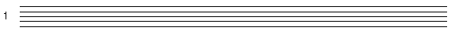
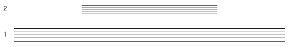
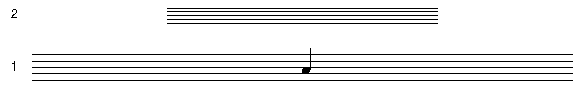
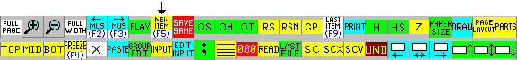
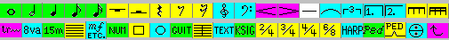
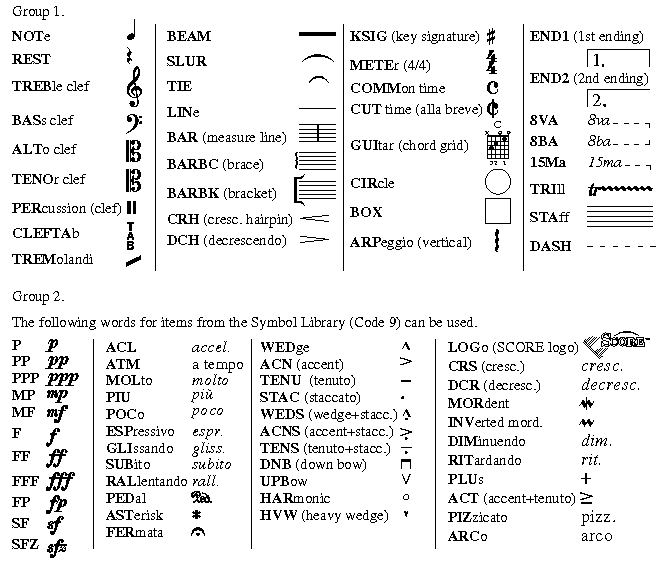
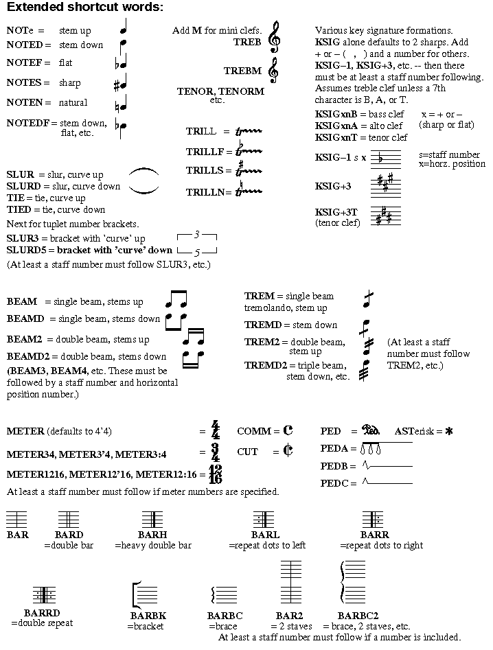

Almost any item that you may wish to put on a page of music may be created by typing the proper parameter numbers. Unusual graphics items may be created with the DRAW feature and added to the symbol library. (See re. Code 9.) Detailed information on the various catagories of items is found on later pages.
To enter a blank musical staff type: 8 1 < enter >

Only two parameters were typed, indicating the catagory
This makes a staff 7 1/2 inches wide, centered on 8 1/2 inches wide letter format paper located 3/4 of an inch up from the bottom of the page. It should be noted that each time a new item is entered it appears as in Edit Mode so that any parameters may be immediately altered. Hitting < Enter > once more exits from Edit Mode.
Including higher parameters will give different results.
8 2 50 0 .6 150 adds a staff at level 2 (P2=2), left end at position 50 (P3=50), size factor = .6 (P5), right end at position 150 (P6).

To add a note to the middle of Staff 1 type: 1 1 100 6 10

P1=1 (notes are in
All items are attached to some staff number (P2). An item's size is always relative to the staff's size factor (P5). If a staff's vertical position is moved (P4), all items attached to that staff will move accordingly.
Two shortcut systems exist for creating many of the available symbols
1.) Selecting items by means of mouse clicks: From the basic toolbar menu select New Item.
 This will bring up the Items Menu.
 Clicking on any of these icons will put the item on the highest present staff number at horizontal position 100. The item will be in Edit Mode so any parameters may be changed immediately. Hitting < enter > will leave Edit Mode.
This menu provides only a few of WinScore's possible symbols, however secondary menus will appear leading to further possibilities.
2.) Selecting items by means of Letter commands.
Special shortcut WORD input commands.
These words provide a shortcut to the creation of many commonly used musical symbols. After the word is typed (and optional parameters) and The word itself serves as the first parameter, P1. If any other parameters are given at the same time, a space MUST follow the input word. If P2 and P3 are not given, or given as zeros, they will default to the highest present staff number and horizontal position 100. The item will be in Edit Mode so any parameters may be changed immediately. Hitting The following shortcut words may be used. The uppercase characters show the minimum identifying letters needed. (In most cases, only three letters are needed.) Some of the words may be extended with letters to indicate implied note stem direction, etc. These variants will be described below.
 